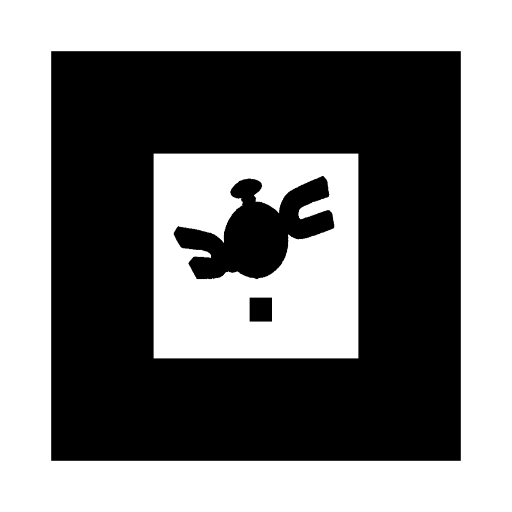

We changed directions and decided to use Augmented Reality instead of Virtual Reality for our final project. Our vision for this project is to have a floor and let the user drop Pokemon onto our floor using AR markers.
We're still using the same 3D figures that we used for Assignment 6, but we've added a Pokemon, Slowpoke, and we have made more models in different colors.
We struggled a bit with instantiating our models at first, but we can now successully instantiate the models correctly using the customized AR markers we created. Another difficulty we faced was that the camera was not good at differentiating the markers we made. We fixed this problem by adding black squares in different locations on the markers, shown below:

So far, our Pokemon can grow in size and become pregnant. When a Pokemon becomes pregnant, the user can see an egg appear on top of the Pokemon and after time, a smaller Pokemon will appear.